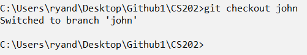
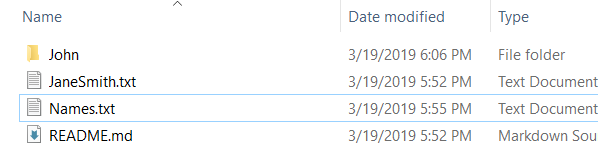

Tutorial: Github and Collaboration
Git: Collaboration Features
For this in class tutorial you will work with a team of 2-3 people to create a Github repository to practice what
you have learned. At the end of class each team member will turn in a zip file of the repository to learning
suite.
In this tutorial you will learn how to
- Set up a new repository on Github
- Clone a Github repository on your computer
- Add files to a Github repository
- Make changes to files on a Github repository
- Resolve merge conflicts
Set-up
First we will set up a new Github repository and invite all team members to join it.
- Have everyone log onto Github.com.
- Have everyong cache their Github password in Git by following the instructions at https://help.github.com/articles/caching-your-github-password-in-git/ (use
the tabs at the top of the page to find the instructions for your operating system). Caching your password
is optional, but makes it so you don’t need to type it in every time.
- Have one person create a new repository for your group by pressing the “New” button on Github
and naming your repository “CS202” and initialize this repository with a README

- After you create the repository you should see something like this.

- Invite each of the members of your team to your repository. You can do this by going to Settings ->
Collaborators and typing in their github usernames or email addresses.

- Wait until each member has accepted the invitation.
Cloning the Repository
Next, you will clone the repository onto each person’s computer. Each person in your group should follow
these instructions.
- Open terminal and navigate to the “Documents” directory on your computer (any directory will
work, just remember which one you chose if you chose a different directory).
- Clone the repository by typing in the command git clone <address> using the address for your
repository which can be found by pressing this button.

- You should now see an empty folder called CS202 appear in your Documents folder.
- Navigate using the terminal so that you are inside the CS202 folder.
- Check to make sure that each member has a copy of the repository on their computer and that each
person’s copy has a README file inside of it.
Adding a File to the Repository
Now each person will practice adding a file to the repository. In software development these files will often be
new classes/objects being added to the project. However, in your case, you will just be adding some simple text
files to your group’s repository to learn the concept of adding files.
- Create a new text file in your folder with your name in upper camelcase as the file’s name. For
example, John Doe would create a file called “JohnDoe.txt”
- Add the file to your next commit with git add <filename>
- Commit the file to your repository with git commit -m “<message>” with the message
being “Added JohnDoe.txt” (replacing the filename with the name of the file you created)
- Type in git pull to update your repository.
- Type in git push to push your commits to the Github repository (always try to pull before you push to
get the latest updates)
- Wait for all members to push their commits then type in git pull to update your repository.
- Type in git log to view all the commits of your repository. (press ‘q’ to escape)
- If done correctly, every person should have a file for each member in their group.
Creating Conflict
For this section we will make changes to a new file and create a merge conflict. A merge conflict means that
you tried to change the same lines in the same file as someone else. This happens frequently in software
development when developers are using Git for large projects. We will create a simple conflict in this section
and fix it in the next section. Note that if you are in a group of three, you may need to do this section and
the next section an additional time.
- Have one person create a file called “Names.txt.”
- Inside the file type “Names:” on the first line.
- Push the file to the repository like you did above (make sure you save first!).
- Have each member pull in the changes.
- Each member should now have a copy of “Names.txt” on their computer.
- Have each member add their name on the line after Names.txt.
- This will create a conflict since multiple people are trying to add the same file.
- Have each member push their changes with the message “Added my name to Names.txt”
- All the people, besides the first person to push, should see an error with the message merge conflict when
they try to pull (since you need to pull before you push).
- Have the people with merge conflicts open “Names.txt.” It should look something like this.

Solving Conflict
In this section we will fix the merge conflict so that the second person can merge their changes with everyone
else.
- Find the merge conflict. This is done by finding the text surrounded in arrows in your
“Names.txt” file. Notice how “Names:” is not inside the arrows because it is the
same in both of the conflicting commits.

- Observe where both of the conflicting commits are by finding the equals signs that divide them.
- Combine the commits together and erase the generated lines. In our case “Combining the commits”
means to type both names on separate lines.
- Your file should look something like this after you combine the commits.

- Add, Commit, and Push your changes.
- Have all members pull in the repository.
- All members should now have a file called “Names.txt” that contains the names of each member of
their group. (you might need to repeat this if you have more than two people in your group).
- Remember that you can avoid merge conflicts with careful planning by making sure that multiple people are
not working on the same parts of the same file at the same time.
Branching
Last, we will learn about branching. We create a new branch when we want to work on a copy of a repository that
we want to make multiple commits to before adding it to the “master branch” (the default branch of a
repository). Creating a branch allows us to isolate our work from others while making a change such as a bug
fix, a creation of a new feature, or doing some experimental work that we may want to discard. Later, we can
choose to either merge our branch into the master branch or discard it if we decide not to keep it. In our
example we will branch off the master repository for each member of the group.
Have each member of the group follow the instructions below.
- Type git branch <name> replacing “<name>” with your first name

- Type git branch to view the branches in your repository
- Type git checkout <name> to switch to your branch
- Add a new directory with your first name and drag the “txt” file with your name into the
directory.

- Type git status, you should see something like this

- Notice that moving the file means deleting it from one place and adding it to another.
- Add and Commit your changes (type “git add .” to add all changes)
- Type git push. If you encounter this error, copy and paste the recommended command and try to
push again.

- Have a person in your group checkout master and pull the changes.
- Notice how the folder with your name doesn’t appear for them.
- Have a person in your group type git checkout <name> (typing in your first name) to switch to
your branch.
- Notice how the folder with your first name appears.
- Practice toggling between master and the different branches in your group with git checkout.
- Last, we will merge your branch into master. Merging means to take all the changes from another
branch and attempt to combine the changes with the branch you have currently checked out.
- Type git checkout master
- Type git merge <name> to merge your branch into master

- Type git push to push your changes
- (Optional) Remove your branch in Github by clicking “branch” and then selecting the option to
delete your branch.

- Wait for each member of your group to finish this section
- Submit a zip folder of your repository to learning suite.
In Conclusion
From the tutorial you should have learned how to
- Set up a new repository on Github
- Clone a Github repository on your computer
- Add files to a Github repository
- Make changes to files on a Github repository
- Resolve merge conflicts
- Create and merge branches